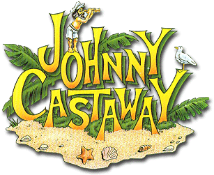

Johnny Castaway Open Source
Welcome to the Johnny Castaway Open Source home page.
On this page you can find information about the project and links where you can download this rewritten version of the screensaver.
This is a work in progress, and the screen saver is far from finished. Only very few scenes are working so far.
The goal is to make it work as close to the original as possible. Another goal is to port the screen saver to as many platforms as possible. Imagine as an animated background on your android device, how cool would that be?
Thanks to the following people for helping with this project:
Jeff Tunnel - For helping me getting in contact with some of the original developers.
Kevin and Liam Ryan - Assisting with information about the resource files
Jaap - Helping in finding the format of the resource files
Grégori - Assisting with the Lempel-Ziv decompression
Guido - The author of the
xBaK project that lead to understanding the TTM and ADS commands.
Useful links: